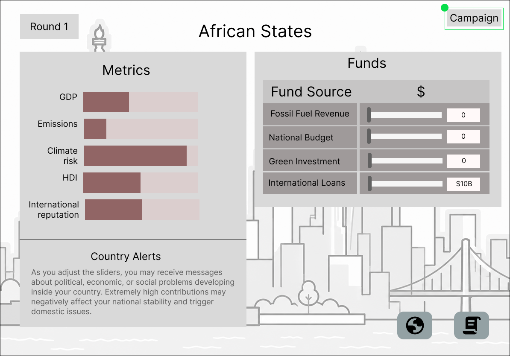
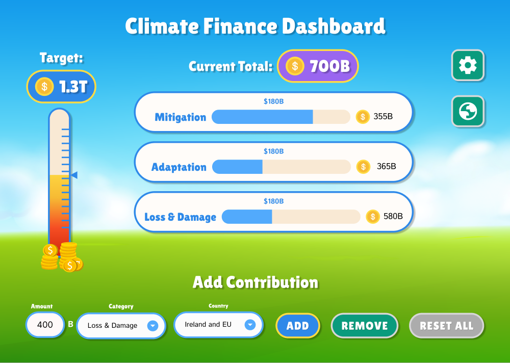
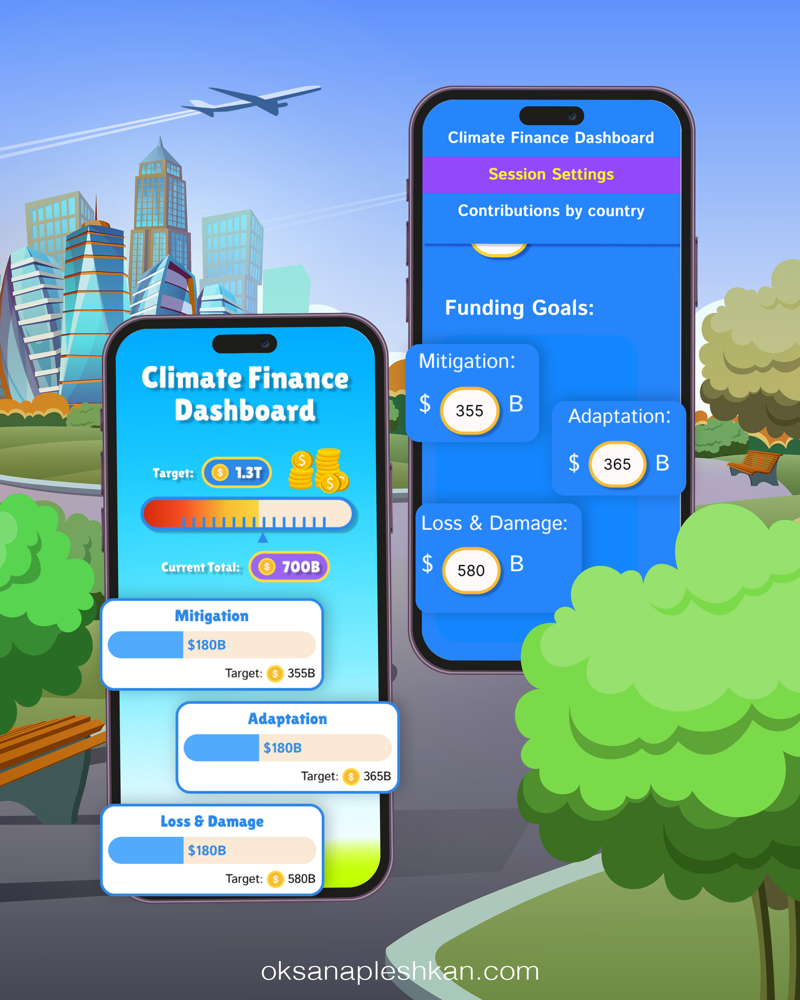

15 Participants
Students and Trócaire representatives took part in the session at TUS.

The project began with an ambition, but no clear product shape. Climate finance involves competing priorities, different funding sources, and difficult negotiations.
My challenge was to understand a complex real-world process and transform it into a simple and engaging game, while keeping it as close as possible to the reality of climate finance negotiations.
Before designing the screens, I carried out extensive research into climate finance, international negotiations, and the roles of countries and organisations.
I explored mitigation, adaptation, and loss and damage, then translated these ideas into player roles, funding choices, and game scenarios. This research shaped both the rules of the activity and the structure of the first prototype.
I mapped how participants would move through the game: choosing a role, exploring available funds, responding to campaigns, preparing contributions, and reviewing results.
The project began with an ambition, but no clear product shape. Climate finance involves competing priorities, different funding sources, and difficult negotiations.
My challenge was to understand a complex real-world process and transform it into a simple and engaging game, while keeping it as close as possible to the reality of climate finance negotiations.
We tested the clickable Figma prototype with 15 participants, including students and representatives from Trócaire, at TUS.
Students and Trócaire representatives took part in the session at TUS.
High- and low-income countries, as well as organizations, are the key participants in the negotiations.
Game design students highlighted that the experience needed a stronger element of game strategy.
The prototype included three user flows: one for higher-income countries, one for lower-income countries, and one for organisations. Teams needed to respond to each other’s decisions, track their own needs, and try to reduce their climate impact.
Game design students highlighted a key gap: the experience needed a stronger element of game strategy. The session also showed how much coordination the proposed format required.

After reviewing the feedback, I met with Trócaire representatives and the TUS lecturer involved in the project. Together, we agreed to simplify the game flow and focus the digital experience on a shared dashboard.
This shifted the app’s role from managing separate player journeys to supporting a facilitator-led group activity. The current dashboard brings funding decisions and progress into one place, while discussion and negotiation happen between participants.
The current app gives facilitators a shared view of the activity. They can set funding targets, choose participating countries, add or remove contributions, and review progress across the three funding areas.
A separate country view shows each group’s contribution, helping facilitators guide the discussion around a clear visual overview.
The app can be used directly in a web browser or installed on a desktop as a Progressive Web App (PWA). It is fully responsive and adapted for desktop, tablet, and mobile devices.

An open-ended idea became a working application, shaped through research, testing, and close collaboration with Trócaire.
The current version meets the agreed needs of the organisers and supports the core learning activity, while leaving room for the concept to develop further.